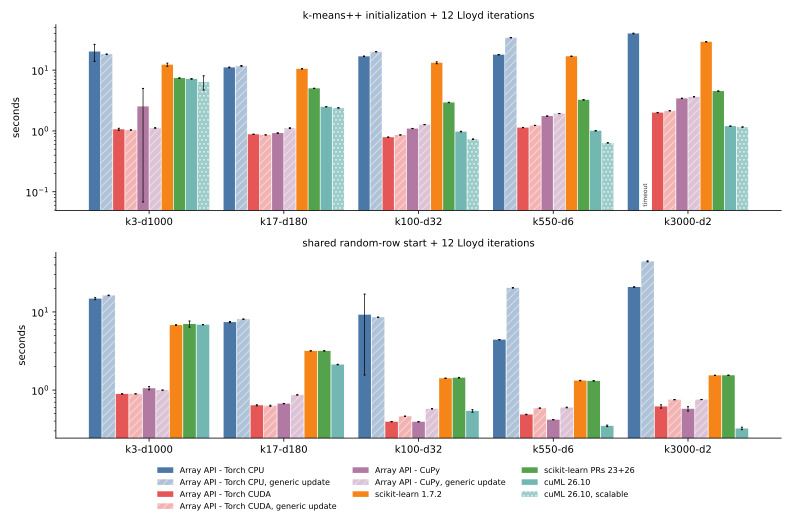
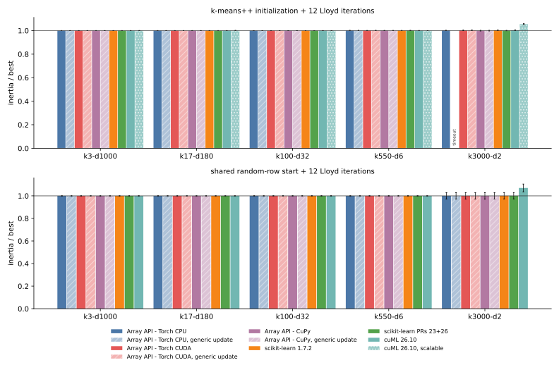
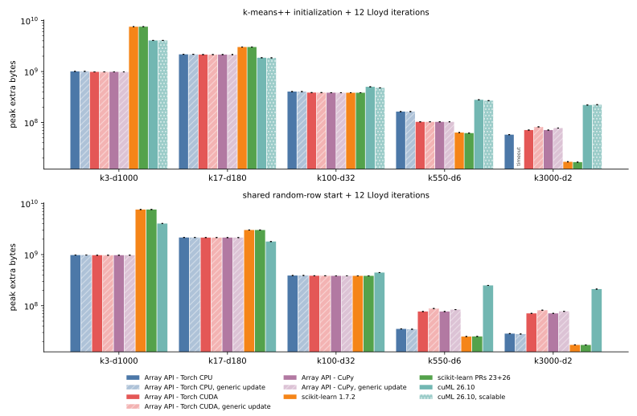
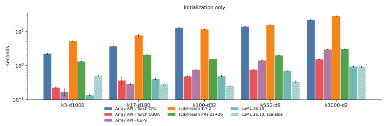

015 — native PyTorch and CuPy updates in the KMeans estimator
This entry adds backend-specific centroid updates to the portable KMeans estimator from 014 and reruns the full five-task benchmark through the public estimator. PyTorch uses index_add_ plus bincount; CuPy uses cupy.add.at plus bincount. Every other array API namespace keeps the portable one-hot update, and use_native_backends(False) forces the portable path everywhere so that each backend can be measured both ways on the same arrays.
The measured implementation is commit 04848dd:
native_accumulatepicks the backend callable, orNonefor the portable fallback;_torch_accumulateand_cupy_accumulatereturn per-cluster sums and counts;update_centroids_tiledcalls the callable when one is given, and shares the empty-cluster relocation with the portable path through_relocate_empty.
def _torch_accumulate(X, labels, n_clusters):
sums = torch.zeros((n_clusters, X.shape[1]), dtype=X.dtype, device=X.device)
sums.index_add_(0, labels, X)
counts = torch.bincount(labels, minlength=n_clusters).to(X.dtype)
return sums, countsResults: fit-results.json (300 full-fit rows), init-results.json (135 initializer rows), fit-first-run-array-api.json (the 180 array-API rows of the first run, superseded below), and the update crossover probes crossover-torch-cuda.json and crossover-cupy.json. The driver is bench_task_mix.py, the figures come from plot_estimator_benchmark.py, and the crossover from probe_update_crossover.py.
Setup
- Same five tasks, seeds, and limits as 011: float32, TF32 disabled,
max_iter=12,tol=1e-8, seeds 0 to 2, 4 CPU threads, a fresh process per run, and a 60-second limit per worker. One NVIDIA L4. - Array-API rows call
KMeans(n_clusters=k, init=..., n_init=1).fit(X)on a tensor or array already on the device. Each run therefore includes input validation, the Lloyd iterations, a final assignment, and an inertia pass. cuML and scikit-learn receive NumPy input as before, so cuML timings include the host-to-device copy. - "generic update" rows run the same estimator with
use_native_backends(False). - Two sections: greedy k-means++ followed by 12 Lloyd iterations, and 12 Lloyd iterations from the same random data rows for every implementation. The shared-start section includes estimator overhead that 011's Lloyd-only rows did not have.
- Memory meters: PyTorch and CuPy pool peaks on CUDA,
VmHWMon CPU, and nvidia-smi for cuML. - Initializer rows are unchanged code and come from the first run.
Two fixes found by the first run
The first full run, on commit f13c074, exposed two problems. Both are fixed in 04848dd and every array-API row was rerun.
Finiteness check memory. The estimator validated non-NumPy input with xp.all(xp.isfinite(X)). CuPy fuses that into one kernel, but eager PyTorch materializes a boolean array plus float temporaries as large as X. The check is now _all_finite: it tests column sums first and falls back to a tiled exact check only when a sum is not finite, which also covers finite data whose sums overflow.
| k-means++ fit, peak extra memory | k3-d1000 | k17-d180 |
|---|---|---|
| Torch CPU, first run | 6301 MiB | 2526 MiB |
| Torch CPU, final | 961 MiB | 2075 MiB |
| Torch CUDA, first run | 6342 MiB | 2523 MiB |
| Torch CUDA, final | 939 MiB | 2051 MiB |
| CuPy, both runs | 939 MiB | 2051 MiB |
Atomic contention at few clusters. On CUDA the scatter-add was slower than the portable update on the 3-cluster, 1000-feature task: Torch CUDA k-means++ fits took 1.56 s against 1.08 s generic. With 950000 samples and 3 clusters, each output address receives about 300000 atomic additions, while the one-hot product is a cheap bandwidth-bound GEMM. The probe below times one update with uniformly random labels on each task's data, sweeping k. Values are generic time divided by native time; italic cells are shapes where the final dispatch keeps the one-hot update.
| backend, samples x features | k=2 | k=3 | k=5 | k=8 | k=17 | k=32 | k=64 | k=100 |
|---|---|---|---|---|---|---|---|---|
| Torch CUDA, 950000 x 1000 | 0.66x | 0.54x | 0.60x | 0.79x | 0.77x | 0.89x | 0.99x | 1.38x |
| Torch CUDA, 2100000 x 180 | 0.26x | 0.42x | 0.64x | 1.07x | 1.18x | 1.44x | 1.57x | 1.99x |
| Torch CUDA, 1500000 x 32 | 0.59x | 0.89x | 1.00x | 1.27x | 2.57x | 4.72x | 8.63x | 6.95x |
| Torch CUDA, 525000 x 6 | 4.70x | 5.26x | 6.09x | 5.94x | 7.77x | 6.85x | 10.81x | 13.81x |
| CuPy, 950000 x 1000 | 0.83x | 0.78x | 0.82x | 0.86x | 0.95x | 1.20x | 1.34x | 1.58x |
| CuPy, 2100000 x 180 | 1.25x | 1.71x | 2.52x | 2.73x | 2.87x | 3.70x | 3.99x | 4.33x |
| CuPy, 1500000 x 32 | 3.25x | 4.73x | 7.35x | 6.08x | 11.82x | 15.71x | 16.31x | 18.19x |
| CuPy, 525000 x 6 | 6.64x | 7.02x | 8.00x | 7.24x | 9.53x | 8.92x | 13.55x | 19.24x |
The crossover depends on both k and the number of features d, and CuPy's add.at tolerates contention better than PyTorch's index_add_. The final dispatch keeps the one-hot update on CUDA when 16 * k < d for PyTorch and 64 * k < d for CuPy. Its worst misses in this sweep are at 2 clusters: PyTorch keeps the scatter-add at d=32, where it runs at 0.59x, and CuPy keeps the one-hot update at d=180, where the scatter-add would be 1.25x faster. On CPU the scatter-add won on every task, so Torch CPU always uses it. In the benchmark, only k3-d1000 falls on the one-hot side, so its CUDA "native" and "generic" rows run the same code.
Full fit after k-means++

| implementation | k3-d1000 | k17-d180 | k100-d32 | k550-d6 | k3000-d2 |
|---|---|---|---|---|---|
| Array API - Torch CPU | 20.24 ± 6.30 s | 11.08 ± 0.17 s | 16.86 ± 0.17 s | 17.94 ± 0.14 s | 40.03 ± 0.54 s |
| Array API - Torch CPU, generic update | 18.23 ± 0.22 s | 11.74 ± 0.18 s | 20.06 ± 0.09 s | 34.15 ± 0.24 s | timeout |
| Array API - Torch CUDA | 1.07 ± 0.04 s | 0.88 ± 0.01 s | 0.79 ± 0.00 s | 1.14 ± 0.01 s | 2.00 ± 0.02 s |
| Array API - Torch CUDA, generic update | 1.04 ± 0.00 s | 0.86 ± 0.00 s | 0.86 ± 0.00 s | 1.23 ± 0.00 s | 2.14 ± 0.01 s |
| Array API - CuPy | 2.53 ± 2.46 s | 0.92 ± 0.01 s | 1.09 ± 0.01 s | 1.76 ± 0.01 s | 3.43 ± 0.03 s |
| Array API - CuPy, generic update | 1.12 ± 0.01 s | 1.11 ± 0.02 s | 1.27 ± 0.00 s | 1.93 ± 0.00 s | 3.64 ± 0.02 s |
| scikit-learn 1.7.2 | 12.29 ± 0.71 s | 10.52 ± 0.01 s | 13.22 ± 0.47 s | 16.91 ± 0.14 s | 29.24 ± 0.13 s |
| scikit-learn PRs 23+26 | 7.40 ± 0.05 s | 5.02 ± 0.00 s | 2.94 ± 0.02 s | 3.25 ± 0.02 s | 4.52 ± 0.01 s |
| cuML 26.10 | 7.18 ± 0.08 s | 2.50 ± 0.01 s | 0.98 ± 0.01 s | 1.01 ± 0.01 s | 1.20 ± 0.00 s |
| cuML 26.10, scalable | 6.38 ± 1.67 s | 2.39 ± 0.02 s | 0.73 ± 0.01 s | 0.64 ± 0.01 s | 1.16 ± 0.01 s |
Three cells have one slow seed, and the means above include it:
- CuPy
k3-d1000: seed 0 took 5.38 s against 1.11 s for seeds 1 and 2. It was the first CuPy process after the code change and paid CuPy's one-time kernel compilation for the new validation reductions. A rerun with an emptyCUPY_CACHE_DIRtook 8.36 s, and 1.11 s once warm. - Torch CPU
k3-d1000(seed 2: 27.5 s against 16.6 s) and the shared-start Torch CPUk100-d32(seed 2: 18.1 s against 4.8 s): reruns of those exact cells took 16.5 s and 4.8 s, so these were transient host noise.

| implementation | k3-d1000 | k17-d180 | k100-d32 | k550-d6 | k3000-d2 |
|---|---|---|---|---|---|
| Array API - Torch CPU | 1.0000 | 1.0000 | 1.0000 | 1.0013 | 1.0017 |
| Array API - Torch CPU, generic update | 1.0000 | 1.0000 | 1.0000 | 1.0013 | timeout |
| Array API - Torch CUDA | 1.0000 | 1.0000 | 1.0000 | 1.0007 | 1.0021 |
| Array API - Torch CUDA, generic update | 1.0000 | 1.0000 | 1.0001 | 1.0013 | 1.0034 |
| Array API - CuPy | 1.0000 | 1.0000 | 1.0001 | 1.0008 | 1.0000 |
| Array API - CuPy, generic update | 1.0000 | 1.0000 | 1.0001 | 1.0008 | 1.0000 |
| scikit-learn 1.7.2 | 1.0000 | 1.0000 | 1.0000 | 1.0009 | 1.0036 |
| scikit-learn PRs 23+26 | 1.0000 | 1.0000 | 1.0000 | 1.0013 | 1.0007 |
| cuML 26.10 | 1.0000 | 1.0000 | 1.0001 | 1.0008 | 1.0034 |
| cuML 26.10, scalable | 1.0005 | 1.0011 | 1.0000 | 1.0000 | 1.0554 |
Quality is mean inertia divided by the best mean in the same section. The native and generic paths agree to the shown precision except where seeded PyTorch CUDA k-means++ draws already differ across processes, as noted in 011; CuPy rows match exactly.

| implementation | k3-d1000 | k17-d180 | k100-d32 | k550-d6 | k3000-d2 |
|---|---|---|---|---|---|
| Array API - Torch CPU | 961 MiB | 2075 MiB | 385 MiB | 156 MiB | 55 MiB |
| Array API - Torch CUDA | 939 MiB | 2051 MiB | 368 MiB | 98 MiB | 68 MiB |
| Array API - Torch CUDA, generic update | 939 MiB | 2051 MiB | 368 MiB | 98 MiB | 78 MiB |
| Array API - CuPy | 939 MiB | 2051 MiB | 366 MiB | 98 MiB | 68 MiB |
| Array API - CuPy, generic update | 939 MiB | 2051 MiB | 366 MiB | 98 MiB | 74 MiB |
| scikit-learn 1.7.2 | 7226 MiB | 2884 MiB | 366 MiB | 60 MiB | 16 MiB |
| scikit-learn PRs 23+26 | 7239 MiB | 2884 MiB | 366 MiB | 59 MiB | 16 MiB |
| cuML 26.10 | 3882 MiB | 1778 MiB | 478 MiB | 266 MiB | 210 MiB |
| cuML 26.10, scalable | 3880 MiB | 1768 MiB | 456 MiB | 256 MiB | 213 MiB |
The scatter-add removes the one-hot tile, which saves 6 to 10 MiB at 3000 clusters; elsewhere the assignment tiles dominate and memory is unchanged.
Lloyd from shared random rows
| implementation | k3-d1000 | k17-d180 | k100-d32 | k550-d6 | k3000-d2 |
|---|---|---|---|---|---|
| Array API - Torch CPU | 14.81 ± 0.43 s | 7.42 ± 0.13 s | 9.24 ± 7.68 s | 4.41 ± 0.01 s | 20.86 ± 0.15 s |
| Array API - Torch CPU, generic update | 16.30 ± 0.14 s | 8.09 ± 0.04 s | 8.56 ± 0.05 s | 20.34 ± 0.16 s | 44.45 ± 0.67 s |
| Array API - Torch CUDA | 0.89 ± 0.00 s | 0.64 ± 0.01 s | 0.39 ± 0.00 s | 0.49 ± 0.00 s | 0.62 ± 0.03 s |
| Array API - Torch CUDA, generic update | 0.89 ± 0.00 s | 0.63 ± 0.01 s | 0.46 ± 0.00 s | 0.59 ± 0.00 s | 0.75 ± 0.00 s |
| Array API - CuPy | 1.06 ± 0.05 s | 0.67 ± 0.00 s | 0.39 ± 0.00 s | 0.42 ± 0.00 s | 0.58 ± 0.04 s |
| Array API - CuPy, generic update | 1.00 ± 0.00 s | 0.87 ± 0.00 s | 0.58 ± 0.00 s | 0.60 ± 0.01 s | 0.76 ± 0.00 s |
| scikit-learn 1.7.2 | 6.79 ± 0.06 s | 3.17 ± 0.00 s | 1.42 ± 0.00 s | 1.32 ± 0.01 s | 1.54 ± 0.00 s |
| scikit-learn PRs 23+26 | 7.02 ± 0.63 s | 3.18 ± 0.02 s | 1.44 ± 0.01 s | 1.31 ± 0.01 s | 1.55 ± 0.01 s |
| cuML 26.10 | 6.88 ± 0.03 s | 2.12 ± 0.02 s | 0.54 ± 0.02 s | 0.35 ± 0.01 s | 0.32 ± 0.01 s |
Every implementation reaches the same objective within 0.07% on all tasks, except cuML at 3000 clusters, which keeps empty centers and ends 6.99% above the best, as in 011.
Native speedup over the generic update
Generic time divided by native time, from the seed means above.
| backend, start | k3-d1000 | k17-d180 | k100-d32 | k550-d6 | k3000-d2 |
|---|---|---|---|---|---|
| Torch CPU, k-means++ | 0.90x | 1.06x | 1.19x | 1.90x | generic times out |
| Torch CPU, shared rows | 1.10x | 1.09x | 0.93x | 4.61x | 2.13x |
| Torch CUDA, k-means++ | 0.97x (same code) | 0.98x | 1.09x | 1.08x | 1.07x |
| Torch CUDA, shared rows | 1.00x (same code) | 0.99x | 1.17x | 1.21x | 1.22x |
| CuPy, k-means++ | 0.44x (same code) | 1.21x | 1.16x | 1.10x | 1.06x |
| CuPy, shared rows | 0.94x (same code) | 1.29x | 1.47x | 1.43x | 1.31x |
The two Torch CPU cells below 1x come from the noisy seed-2 runs above: without seed 2 they are 1.10x and 1.78x. The CuPy k3-d1000 k-means++ cell reflects the one-time kernel compilation.
Comparison with 011
011 called the Lloyd loop directly, with the earlier tile schedule and the one-hot update; 015 goes through the estimator with the tile schedule chosen in 014 and the native update. Seed means, k-means++ full fit:
| implementation | k3-d1000 | k17-d180 | k100-d32 | k550-d6 | k3000-d2 |
|---|---|---|---|---|---|
| Torch CPU, 011 | 17.31 s | 11.21 s | 25.88 s | 53.53 s | timeout |
| Torch CPU, 015 | 20.24 s | 11.08 s | 16.86 s | 17.94 s | 40.03 s |
| Torch CUDA, 011 | 0.94 s | 1.25 s | 1.20 s | 1.66 s | 2.62 s |
| Torch CUDA, 015 | 1.07 s | 0.88 s | 0.79 s | 1.14 s | 2.00 s |
| CuPy, 011 | 1.13 s | 1.77 s | 1.79 s | 2.44 s | 4.32 s |
| CuPy, 015 | 2.53 s | 0.92 s | 1.09 s | 1.76 s | 3.43 s |
| cuML 26.10 | 7.18 s | 2.50 s | 0.98 s | 1.01 s | 1.20 s |
The shared-start rows, 011 Lloyd-only against 015 estimator fit:
| implementation | k3-d1000 | k17-d180 | k100-d32 | k550-d6 | k3000-d2 |
|---|---|---|---|---|---|
| Torch CUDA, 011 | 0.77 s | 1.01 s | 0.79 s | 0.98 s | 1.25 s |
| Torch CUDA, 015 | 0.89 s | 0.64 s | 0.39 s | 0.49 s | 0.62 s |
| CuPy, 011 | 0.96 s | 1.54 s | 1.07 s | 1.07 s | 1.39 s |
| CuPy, 015 | 1.06 s | 0.67 s | 0.39 s | 0.42 s | 0.58 s |
| cuML 26.10 | 6.88 s | 2.12 s | 0.54 s | 0.35 s | 0.32 s |
From 17 clusters up, most of the GPU gain over 011 comes from the tile schedule: the shared-start generic rows are already 1.6x to 1.8x faster than 011. The native update adds another 1.2x to 1.5x from 100 clusters up. At 3 clusters, 015 is about 0.1 s slower because the estimator adds validation, a final assignment, and an inertia pass over the 3.8 GB input.
Initialization only
Greedy k-means++ does not use the centroid update, so these rows only check that the initializer still matches 011.

| implementation | k3-d1000 | k17-d180 | k100-d32 | k550-d6 | k3000-d2 |
|---|---|---|---|---|---|
| Array API - Torch CPU | 2.20 s | 3.62 s | 12.73 s | 13.79 s | 21.54 s |
| Array API - Torch CUDA | 0.22 s | 0.36 s | 0.47 s | 0.74 s | 1.49 s |
| Array API - CuPy | 0.16 s | 0.28 s | 0.74 s | 1.38 s | 2.93 s |
| scikit-learn 1.7.2 | 5.14 s | 7.65 s | 11.45 s | 15.34 s | 28.06 s |
| scikit-learn PRs 23+26 | 1.30 s | 2.04 s | 1.53 s | 1.96 s | 3.00 s |
| cuML 26.10 | 0.13 s | 0.40 s | 0.48 s | 0.69 s | 0.92 s |
| cuML 26.10, scalable | 0.49 s | 0.28 s | 0.25 s | 0.33 s | 0.90 s |
Every row is within 0.2 s or 10% of 011. Quality and memory are in init-quality.svg and init-memory.svg; they repeat 011's conclusions.


Conclusions
- The native PyTorch and CuPy updates are now the default for those namespaces, with the portable update kept for every other namespace and for wide CUDA inputs with few clusters.
- On CUDA, the native update speeds up k-means++ fits by 1.06x to 1.21x and shared-start fits by 1.17x to 1.47x, from 17 clusters up on CuPy and from 100 clusters up on PyTorch. Assignment now dominates the remaining time.
- Torch CPU gains the most: 1.9x on the 550-cluster k-means++ fit, 4.6x on its shared-start fit, and the 3000-cluster k-means++ fit now finishes in 40 s instead of timing out.
- PyTorch CUDA and CuPy now beat cuML's shared-start Lloyd at 100 clusters (0.39 s against 0.54 s) and stay faster at 3 and 17 clusters. cuML remains faster at 550 and 3000 clusters, by 1.2x to 1.9x. For k-means++ fits, cuML greedy is faster at 550 and 3000 clusters and cuML scalable from 100 clusters up; greedy initialization alone costs 0.5 to 2.9 s on the array-API backends there.
- Two estimator-level fixes came out of the first run: a finiteness check without input-sized temporaries, which recovers 5.3 GiB of PyTorch memory on the widest task, and a backend-specific
k-versus-dcrossover for the scatter-add.
Previous: portable array-API KMeans. Next: GEMM versus broadcast distances. Index: journal.